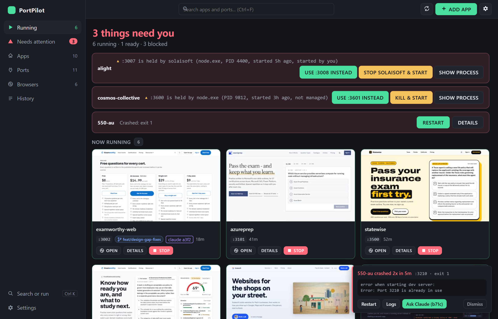
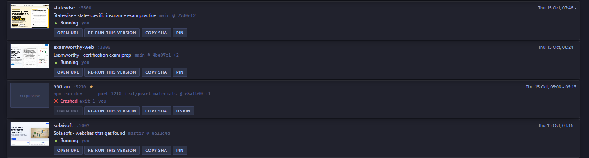
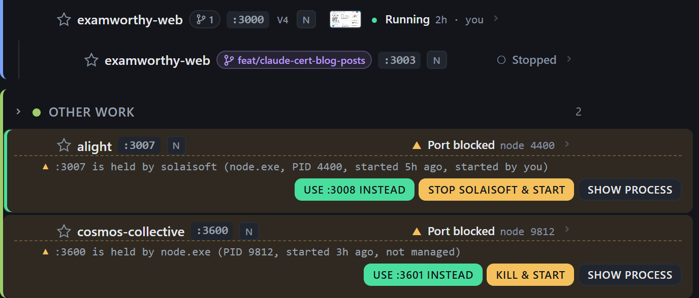
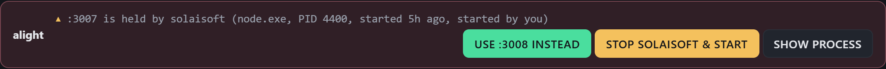
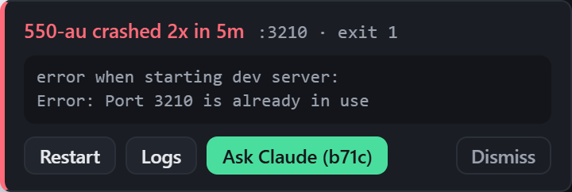
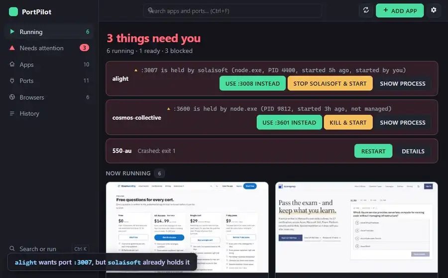
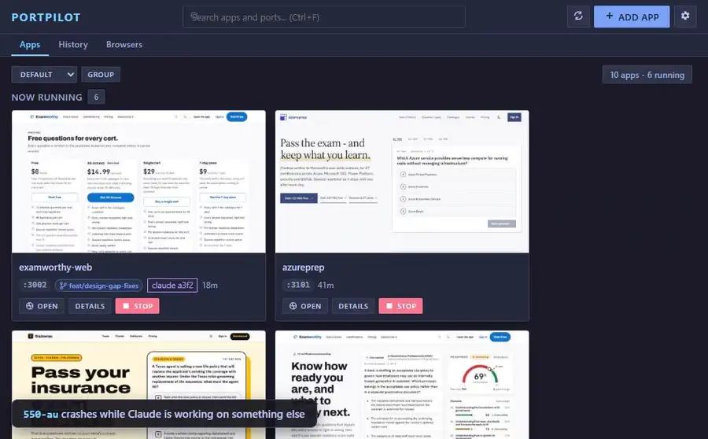
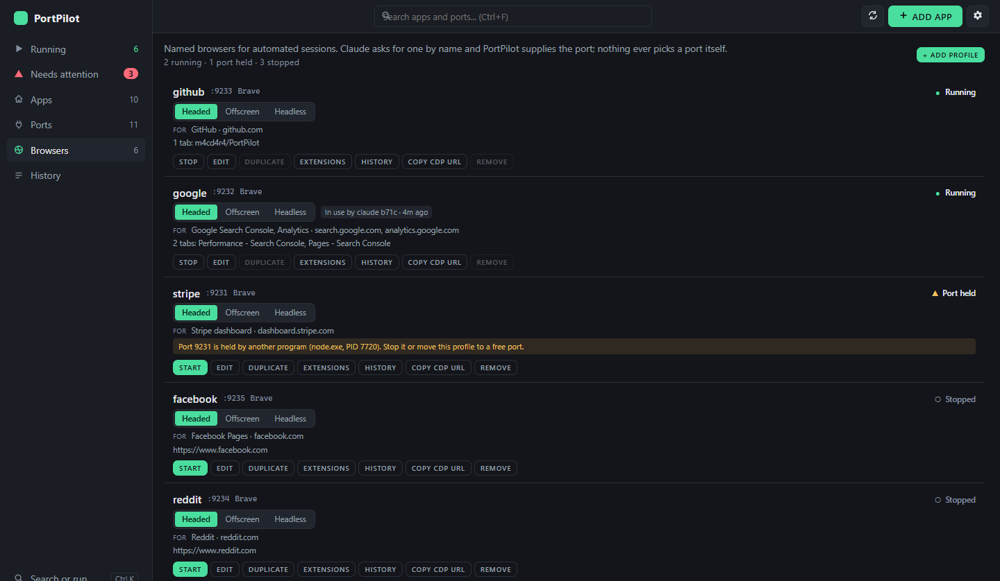
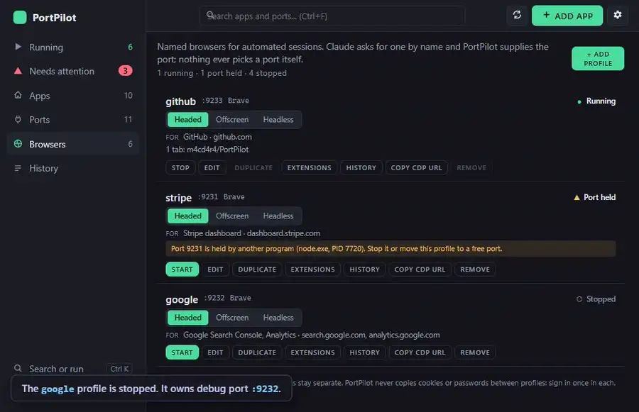
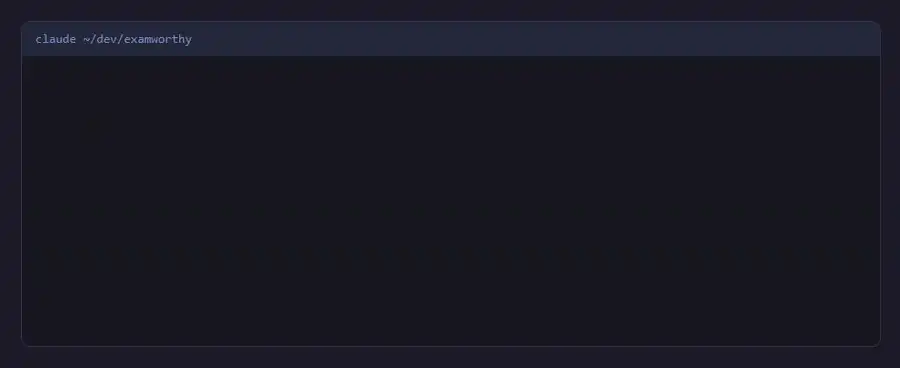

Status line
Every Claude Code session shows what is up, worst state first. A ✦ marks apps an AI assistant started.
⚓ 1 crashed · 7 up · :3000 examworthy-web
PortPilot 4 · free · MIT
PortPilot runs your dev servers and shows every port and crash. Connect Claude Code, Cursor or any MCP assistant to share that view and stop duplicate servers.
Windows 10/11 and Linux. Works on its own; the AI assistant link is optional.

> npm run dev
PortPilot: examworthy-web is already running on :3000 - reuse http://localhost:3000 instead of starting a second copy.
✕ 550-au crashed · :3210 · exit 1
Error: Port 3210 is already in use
Fix itRestartLogsDismiss
The PortPilot MCP server gives your assistant 26 tools: list, start, stop, scan, kill, group and more.
Any assistant can drive PortPilot through MCP (above). Claude Code also gets a plugin: the PortPilot tools, a status line, a guard on dev-server starts and a crash band.
Every Claude Code session shows what is up, worst state first. A ✦ marks apps an AI assistant started.
⚓ 1 crashed · 7 up · :3000 examworthy-web
A start on a busy port is turned away with the URL to reuse. A clean start goes through PortPilot. If the guard can't tell what a command does, it lets it run.
reuse http://localhost:3000
When an app an assistant started crashes, the session gets a band with Restart, Logs and Fix it. Fix it hands the crash and the stderr tail to Claude.
✕ 550-au · exit 1
Install in Claude Code
/plugin marketplace add m4cd4r4/PortPilot
/plugin install portpilot@portpilotThe MCP server is bundled: no npm install.
A history of every run, a page preview on each running row, and rows that say who started them.
Every start, stop and crash is recorded locally, with the branch, commit and any uncommitted files. Search by app, branch or file, then re-run an old version in a sibling worktree. Claude can look a run up too, with the find_run tool.

Every app shows its state, how long it has been in it and who started it: you, or a Claude Code session. A running app also shows a small preview of its page, so the right server is easy to spot. A crashed app reads ✕ Crashed · exit 1. The VS Code tree uses the same states.

When something else holds an app's port, the row says what holds it and offers Use free port, Kill & start or Show process. Kill asks for a second click.

A crash raises a sticky toast with the stderr tail. Ask Claude appears when the session that started the app is still open, and sends it the crash. Repeat crashes group into one toast.

A blocked port resolved in two clicks: the first arms the button, the second stops the holder and starts your app. Then a crash, its toast, and Ask Claude sending the stderr to the session that started the app.


A debug port is how a program drives a Chromium browser. Give each profile its own, and PortPilot hands the right one to your AI assistant.
A browser opens with --remote-debugging-port=<n>, and anything that can reach 127.0.0.1:<n> can read its tabs and click in them. A PortPilot profile is a named browser with its own sign-ins and its own port, so google stays signed in to Search Console while github stays signed in to GitHub. Nothing picks a port by chance. If another program holds a profile's port, the row says which one.

In the Browsers tab, or the VS Code Browsers view, Start opens the profile's own Brave or Chrome on its port. Stop closes it and frees the port.

Label each profile with what it is for and the sites it logs into. Claude calls start_browser with for set to the site and gets the matching profile and its cdpUrl. A session that started a profile holds it until the session ends; other sessions are told it is in use and steered to a free one.

The Claude Code clip is a terminal frame rendered around the plugin's real output, not a capture of the Claude Code app.
The desktop app opens no network port. The opt-in web portal stays on your machine, behind six layers.
Threat model and limits in SECURITY.mdFree and open source. No account and no admin rights. Install it, click Scan, then add your projects.
From source: npm install then npm start on GitHub. Older builds on Releases.